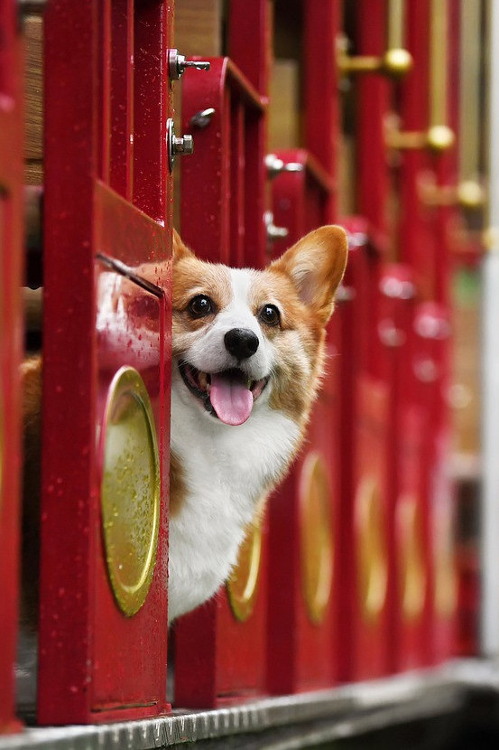
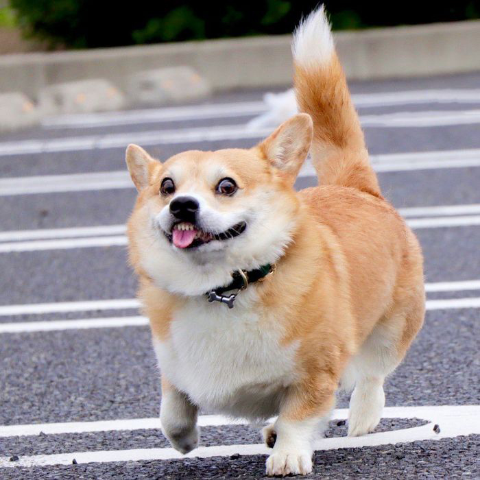

ФОТОГРАФИИ



"Кроме того, я взял за правило помогать поддерживать чистоту и порядок в доме и подъедал кусочки еды, которые падали на пол. Позже я стал запрыгивать на стулья в кухне и очищать тарелки, которые семья иногда оставляла на столе. После моего облизывания посуда всегда оставалась очень чистой"
Эти собаки отличаются отменным интеллектом и интуицией, поэтому никогда не станут надоедать хозяину, когда у него плохое настроение. Сами же они не склонны впадать в депрессии.
Корги безумно любопытны, и это проявляется в их быстрой социализации и адаптации. Кстати, корги легкообучаемы, поэтому без труда уже через несколько месяцев будут приносить вам тапки и бежать за мячиком на прогулке.